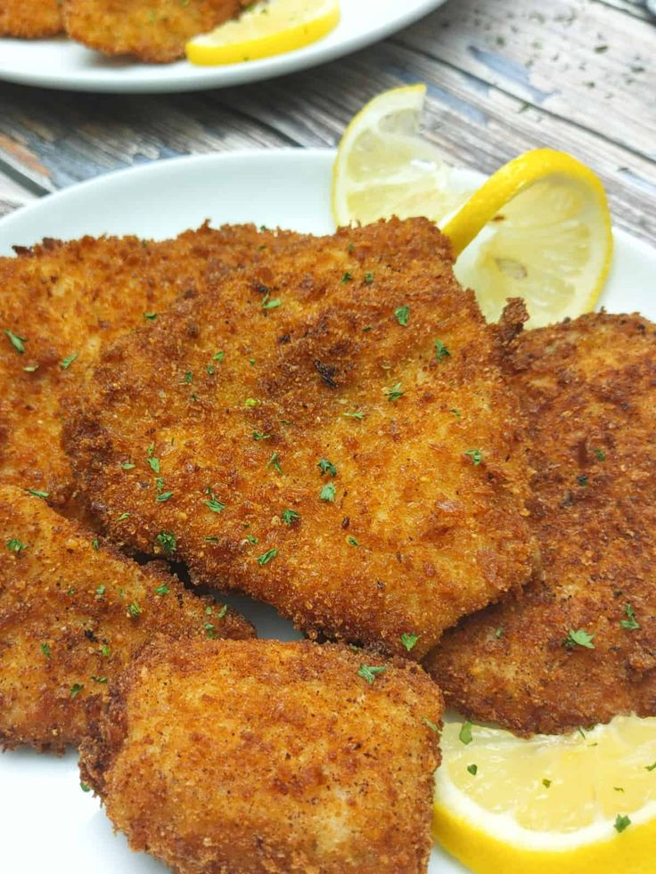
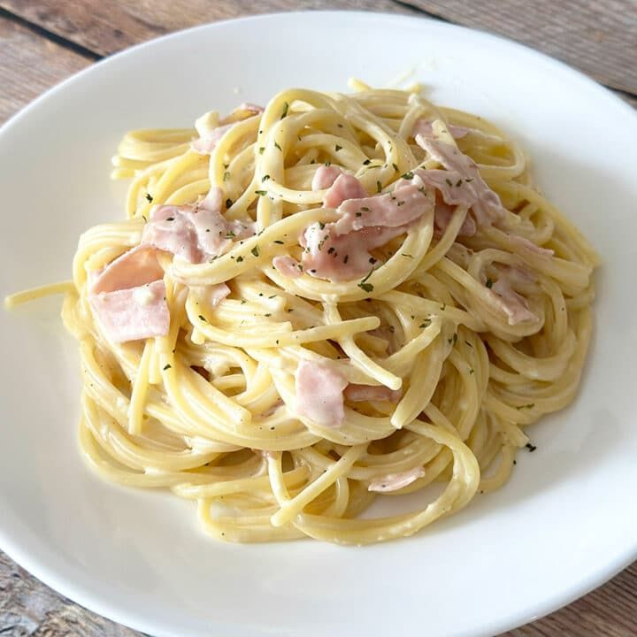

Tacos al Pastor
Tacos al Pastor recién preparados con su toque de piña. Una receta tradicional mexicana con carne de cerdo marinada y cocida al trompo.
Un espacio para compartir mis recetas favoritas.
Tacos al Pastor recién preparados con su toque de piña. Una receta tradicional mexicana con carne de cerdo marinada y cocida al trompo.
Milanesas crujientes acompañadas de ensalada fresca. Un platillo clásico que nunca falla: carne empanizada, dorada y deliciosa.
Espagueti con salsa de jitomate y un toque de queso parmesano. Un clásico de la cocina italiana: pasta al dente con salsa casera.
Soy Abimael, un entusiasta de la cocina que disfruta experimentar con sabores y compartir mis recetas.
Mi pasión es cocinar y disfrutar la cocina.